Anforderungen an Arbeitsräume
- Ausreichend gesundheitlich zuträgliche Atemluft je nach Arbeitsverfahren, Zahl der Beschäftigten und körperlicher Beschäftigung.

- Mindestraumtemperatur in Arbeitsräumen:
- in Büroräumen 20 °C,
- bei überwiegend sitzender mittelschwerer Tätigkeit 19 °C,
- bei überwiegend nicht sitzender mittelschwerer Tätigkeit 17 °C,
- bei schwerer körperlicher Arbeit 12 °C.
- Fenster müssen von den Beschäftigten sicher zu öffnen, zu schließen, zu verstellen und zu arretieren sein und dürfen im geöffneten Zustand keine Gefahr darstellen
 .
.
- Arbeitsräume müssen eine ausreichende Grundfläche und eine, in Abhängigkeit von der Größe der Grundfläche der Räume, ausreichende lichte Höhe aufweisen, so dass die Beschäftigten ohne Beeinträchtigung ihrer Sicherheit, ihrer Gesundheit oder ihres Wohlbefindens ihre Arbeit verrichten können. Die Größe des notwendigen Luftraums richtet sich nach der körperlichen Beanspruchung und der Zahl der anwesenden Personen.
- Bodenvertiefungen – z. B. Arbeitsgruben – durch Geländer oder Abdeckungen sichern.
- Verkehrswege müssen sicher begehbar oder befahrbar sein.
- Fluchtwege und Notausgänge kennzeichnen
 .
.
- Sichtverbindung nach außen
 .
.
Beleuchtung 
- Arbeitsräume müssen möglichst ausreichendes Tageslicht erhalten.
- Beleuchtungseinrichtungen so anordnen, dass sich keine Unfall- und Gesundheitsgefahren ergeben.
- Bei Ausfall der Allgemeinbeleuchtung muss eine ausreichende Sicherheitsbeleuchtung vorhanden sein.
Fußböden 
- Fußböden dürfen keine Unebenheiten, Löcher, Stolperfallen oder gefährliche Schrägen aufweisen. Sie müssen rutschhemmend, tragfähig, trittsicher und leicht zu reinigen sein.
Rettungszeichen für Mittel und Einrichtungen zur Ersten Hilfe
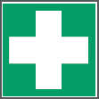 |
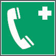 |
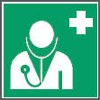 |
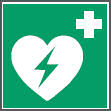 |
| E003 Erste Hilfe |
E004 Notruftelefon |
E009 Arzt |
E010 Automatisierter
Externer Defibrilator (AED) |
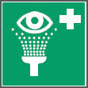 |
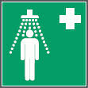 |
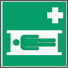 |
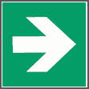 |
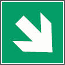 |
| E011 Augenspüleinrichtung |
E012 Notdusche |
E013 Krankentrage |
E005 Richtungspfeil* |
E006 Richtungspfeil* |
*Richtungspfeil nur als Zusatzzeichen zu den Rettungszeichen für Mittel und Einrichtungen zur Ersten Hilfe verwenden.
Rettungszeichen für Rettungsweg/Notausgang
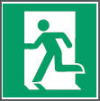 |
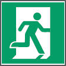 |
E001 Rettungsweg/
Notausgang (links)** |
E002 Rettungsweg/
Notausgang (rechts)** |
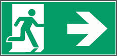 |
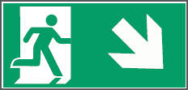 |
| E002 Beispiele für Rettungsweg/Notausgang mit Zusatzzeichen (Richtungspfeil) |
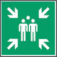 |
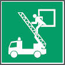 |
| E007 Sammelstelle |
E017 Rettungsausstieg |
** dieses Rettungszeichen darf nur in Verwendung mit einem Zusatzzeichen (Richtungspfeil E005, E006) verwendet werden.
07/2021